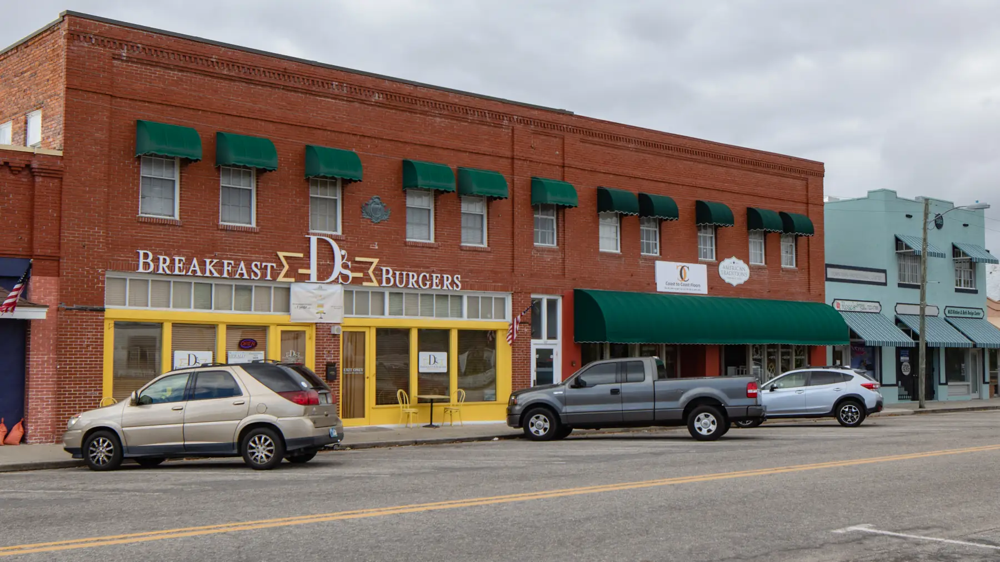

North of the River
Palmetto
Manatee County, Florida
Photo Paul R. Burley, via Wikimedia Commons · Creative Commons Attribution ShareAlike 4.0
Palmetto sits directly across the Manatee River from Bradenton and is a city in its own right, with its own downtown, its own historic district, and a working waterfront. It is older than most of what surrounds it.
The riverfront position gives it direct access out to Tampa Bay, and prices have historically run below comparable property on the south side of the river.
- To the Beach
- About 25 to 30 minutes
- Typical Range
- [[FILL IN: pull from Stellar MLS]]
- What Was Built Here
- Historic homes, mid century, riverfront, newer construction
The Details
What defines Palmetto.
- A historic downtown and a designated historic district
- Manatee River frontage with direct access toward Tampa Bay
- The Green Bridge and US 41 connecting directly to Bradenton
- Emerson Point Preserve at the western end of the peninsula
- Generally lower price points than the equivalent south of the river
Questions
What people ask me about Palmetto.
How is Palmetto different from Bradenton?
It is a separate city with its own government, its own utilities in places, and its own downtown. Practically it is minutes from Bradenton across the bridge, but the tax rates, permitting, and services follow the city of Palmetto rather than Bradenton or the county.
What is the historic district?
Palmetto has a designated historic district containing a concentration of late nineteenth and early twentieth century homes. Properties within it can be subject to review for exterior changes and demolition. Whether a particular property falls inside the district is a question for the city, and worth asking before planning renovations.
Is the riverfront here practical for boating?
The Manatee River gives direct access out to Tampa Bay and the Gulf beyond without crossing a pass, which some boaters prefer. As always, the constraints are draft, dock condition and permitting, and bridge clearances on the route, and those are specific to the property rather than to the area.
Nearby